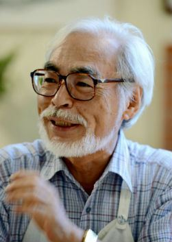
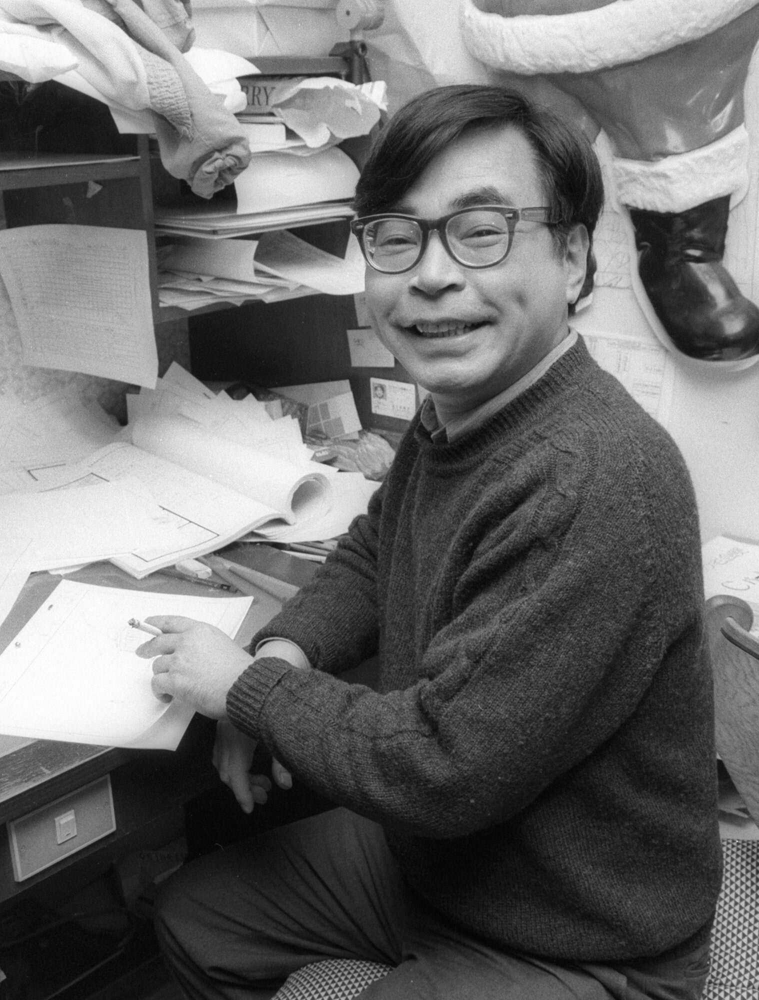
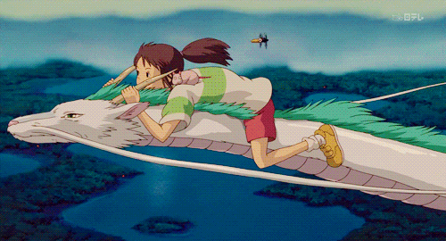
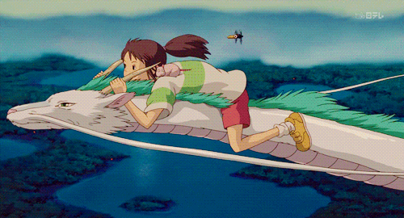
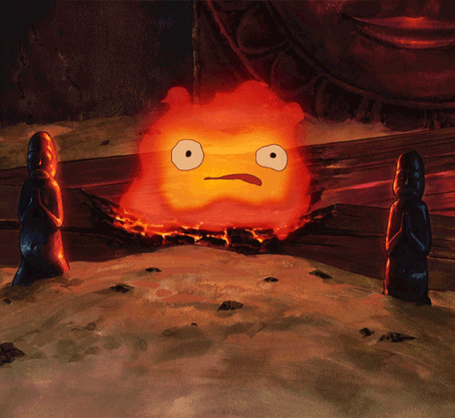
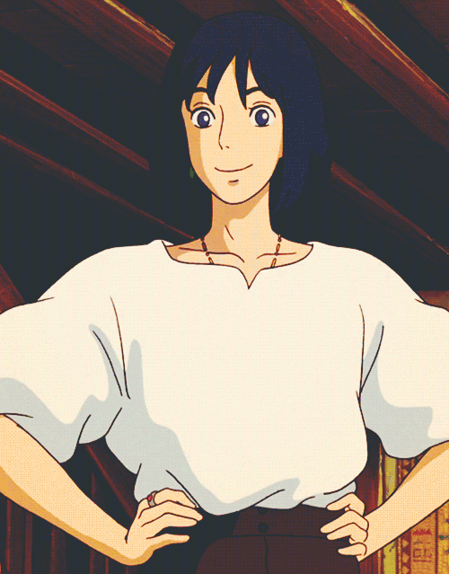

History of Hayao Miyazaki


Hayao Miyazaki was born on January 5th, 1941 in Tokyo, Japan. He was born to an aircraft parts manufacturer, Katsuji Miyazaki, who worked at the family business Miyazaki Airplanes. He was one of four sons, with his only older brother being Arata Miyazaki, and his two younger brothers being Yutaka Miyazaki and Shirou Miyazaki. In 1944, when Hayao was three, his father moved the family to Utsunomiya City to escape the American bombing of Tokyo, and the family remained there for two years, until 1946. Hayao attended three different grade schools between 1947 and 1952. His mother became sick with spinal tuberculosis from 1947 to 1955, and was in a hospital for the first few of those years. In 1955, Hayao graduated elementary school and went on to attend Omiya Junior High. He graduated from Omiya Junior High in 1958 and went on to attend a public high school, Toyotama High, until 1962, when he graduated high school and entered university. While at Gakushuin University, he majored in economics and graduated with degrees in economics and political science.
Some might wonder, given that he didn’t go to university for animation, how exactly his career in animation got started. Hayao wasn’t always interested in animating; he saw his first feature-length color anime, Hakujaden, in his third year of high school, and decided he wanted to be a comic artist. After graduating university, Hayo landed a job at Toei Animation, where he trained for three months and became an inbetweener, someone who draws the intermediate frames between two images. It is here that his career in animation got started. In 1968, the first film Hayao Miyazaki played a major role in making came out; that movie was Prince of the Sun, which he worked on with director Isao Takahata, who would later be a producer for some of Hayao’s own movies. In 1971, Hayao left Toei Animation and joined A-Pro with Takahata and Yoichi Otabe. Two years later, in 1973, the team quit A-Pro and joined Zuiyo Pictures, where he worked on Heidi: Girl of the Alps and Three Thousand Miles in Search of Mother. In 1983, he began working on the Nausicaa of the Valley of the Wind film, and in 1984, he and Takahata opened their own office. Finally, in 1985, Hayao helped found Studio Ghibli, which would go on to cement his name as a truly famous animator.
- Fun Facts About Hayao Miyazaki
- He is a lifelong aviation fan.
- He never starts his films with a script.
- He refused to attend the 2003 Oscars ceremony as a protest against the American invasion of Iraq.
- He's only created one film, The Wind Rises, geared specifically towards adults.
- His favorite children's book is The Borrowers by Nancy Norton.
To learn more about Hayao Miyazaki's life, click
here.
Hayao Miyazaki's Work
Hayao Miyazaki is most well-known for his animated movies, which hold a special place in many people’s hearts. He both directed and was screenwriter for the films Castle in the Sky, My Neighbor Totoro, Kiki’s Delivery Service, Porco Russo, Princess Mononoke, Spirited Away, Howl’s Moving Castle, Ponyo, The Wind Rises, and How Do You Live, an upcoming film. He was screenwriter on Whisper of the Heart, Arrietty, From Up on Poppy Hill, and Earwig and the Witch. Princess Mononoke was the highest-grossing film in Japan in 1997 following its release, and was the first animated film to win the Japan Academy Prize for Picture of the Year. Spirited Away, released in 2001, became the highest-grossing film in Japanese history and won the Academy Award for Best Animated Feature at the 75th Academy Awards. Of the top ten highest-grossing animated films, five are movies that Miyazaki wrote and directed, and one is a movie that he wrote but did not direct. Below are some images from two of his films that he wrote and directed that are in the top ten highest-grossing animated films. The top two are from Spirited Away and the bottom two are from Howl’s Moving Castle:
 



- Hayao Miyazaki Films in the Top 10 Highest-Grossing Animated Films
- Spirited Away
- Howl's Moving Castle
- Ponyo
- Princess Mononoke
- Arrietty
- The Wind Rises
The majority of Hayao Miyazaki’s animated films were created at Studio Ghibli, which was founded on June 15th, 1985, by Hayao Miyazaki, Isao Takahata, and Toshio Suzuki. The name ‘Ghibli’ came from the Italian word ‘ghibli’, which means ‘a hot, dust-carrying wind’, with the idea being that the studio would “blow a new wind through the anime industry.” To its credit, that is exactly what it did, with six of the top ten highest-grossing animated films and eleven of the top fifty highest-grossing animated films being made by Studio Ghibli. Miyazaki was involved in the majority of the films produced by Studio Ghibli. Of the twenty-three films the studio made, nine of the films they produced were directed and written by him and four of the films they produced were written by him, meaning more than half of Studio Ghibli’s films involved Miyazaki. That number is soon to go up, as the studio has a new film planned that is going to be written and directed by Miyazaki. In creating Studio Ghibli, Miyazaki helped introduce a number of wonderful new animated movies to the world.
| Year | Title | Director | Writer | Producer | Other roles | Notes |
|---|---|---|---|---|---|---|
| 1979 | The Castle of Cagliostro | Yes | Yes | |||
| 1984 | Nausicaä of the Valley of the Wind | Yes | Yes | |||
| 1986 | Castle in the Sky | Yes | Yes | |||
| 1988 | My Neighbor Totoro | Yes | Yes | |||
| 1989 | Kiki's Delivery Service | Yes | Yes | Yes | ||
| 1992 | Porco Rosso | Yes | Yes | |||
| 1995 | Whisper of the Heart | Yes | General producer | |||
| On Your Mark | Yes | Music video | ||||
| 1997 | Princess Mononoke | Yes | Yes | |||
| 2001 | Spirited Away | Yes | Yes | |||
| 2004 | Howl's Moving Castle | Yes | Yes | |||
| 2008 | Ponyo | Yes | Yes | |||
| 2010 | Arrietty | Yes | Yes | Planning | ||
| 2011 | From Up on Poppy Hill | Yes | Yes | Planning | ||
| 2013 | The Wind Rises Yes | Yes | Yes | |||
| TBA | How Do You Live? | Yes | Yes | In production |
To learn more about Hayao Miyazaki's works, click here.
To learn more about Studio Ghibli, click here.
Hayao Miyazaki's Themes and Influence
The biggest reason why Hayao Miyazaki’s movies are so incredibly popular is that they appeal to both adults and children. Miyazaki’s focus was on making movies the whole family could enjoy, and so while his films are appropriate for children, they also contain themes that adults can understand and appreciate. This, along with his themes, makes the films appealing to all ages. Themes that are common in Hayao Miyazaki’s work are those of nature, the brutality of man, and the loss of innocence. Miyazaki is very aware of environmental loss, and even his early film My Neighbor Totoro was, in a way, an elegy for a lost Japan. Many of his films, in fact, have a sense of loss, and they don’t always have perfect happy endings. For instance, in Princess Mononoke, the two protagonists care about each other, but the world is so complicated and challenging that they don’t get a happily ever after where they stay together forever. His films also contain complex characters. There are no strictly good or bad people—the bad people have some good in them, and the good people have some bad in them. He doesn’t make it clear-cut or easy to make decisions about people, and that is very relevant to real life, where things are rarely clear-cut.
His work appealing to so many and being so popular has caused Miyazaki and his work to have incredible influence on the animation industry. His distinctive art style and fantastical narratives are inspirations for many. Several directors and animators in Hollywood have been inspired by his work, the most notable being Guillermo del Toro. More recently, his work influenced director Wes Anderson in his film Isle of Dogs. Anderson said that in Miyazaki’s movies you get nature and moments of peace, which is a kind of rhythm that isn’t experienced in American films as much, and he sought to emulate that rhythm. Even after retiring, Miyazaki’s work will certainly continue to influence the works of others, making him truly one of the greatest animators of all time, if not the greatest animator of all time.